Resumo
Por modelo
Tendências
Status (distribuição)
Custo acumulado por modelo
Tokens por run (no tempo)
Duração por run (ms, no tempo)
Sessões
Alertas acionáveis
Política atual (derivada dos dados)
Melhor agente agora (score global)
Roteamento por tarefa
Ranking por tarefa score = produtividade − erro − custo relativo
Próximo passo por sessão
Recomendação de próximo agente (últimas sessões ativas)
Contrafactual
Simulação sem Codex
Aprendizados extraídos do PROJECT_STATE.md
Contagem
Eficiência por agente
Custo & outcomes
Custo por outcome, por agente
Valor × custo (scatter, color = agente)
Distribuições
Duração
Custo
Volume & saúde por agente
Runs por dia (empilhado + MA 3d)
Erros por tipo
Saúde dos modelos
Codex (concordância vs discordância)
Claude (outcomes por dia + retry rate)
Tarefas & mapa agente × tarefa
Top tarefas
| Tarefa | Runs | Custo | Erro % | Agente dominante |
|---|
Heatmap (runs: agente × tarefa)
Regressões por input
Δ qualidade por fingerprint (precisa 2+ runs avaliadas pro mesmo input)
Cadeia de runs
Hand-offs entre agentes (parent_run_id)
Render limpo (output esperado, pós Fase 6)
Como o .skp ficaria a partir do observed_model.json. Render simulado em matplotlib via scripts/preview/render_preview.py — o bridge Ruby/SketchUp ainda não foi construído.
Run de referência: openings_refine_final (261 walls · 23 rooms · 24 openings · 0 órfãos).
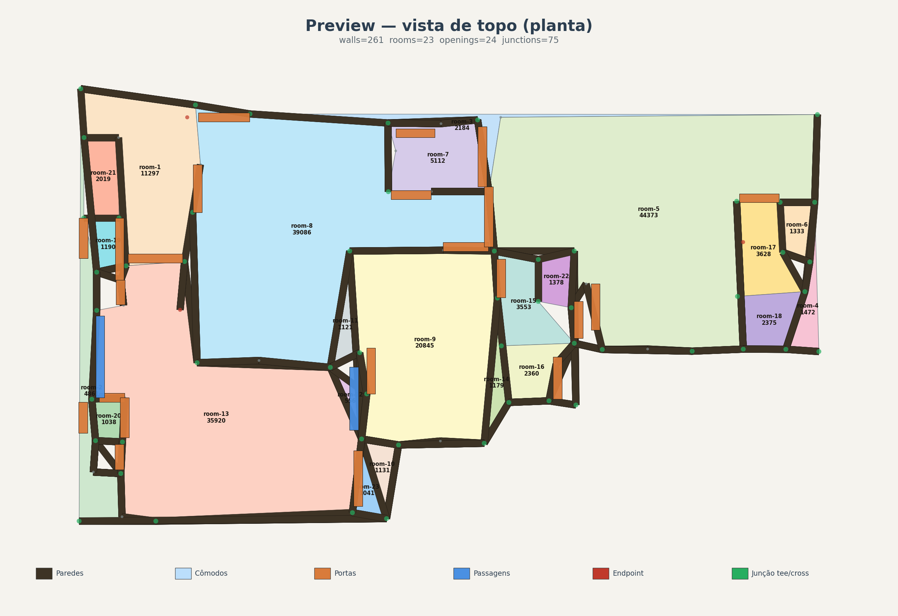
Vista de topo (planta 2D)
Cômodos coloridos com room_id + área. Walls como footprint. Openings marcados (laranja=portas, azul=passagens). Junctions categorizadas.
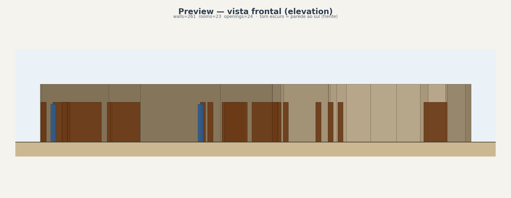
Vista frontal (elevation)
Projeção 2D no plano X-Z com sombreamento por profundidade Y. Tom escuro = parede ao sul (frente); claro = ao norte (fundo).
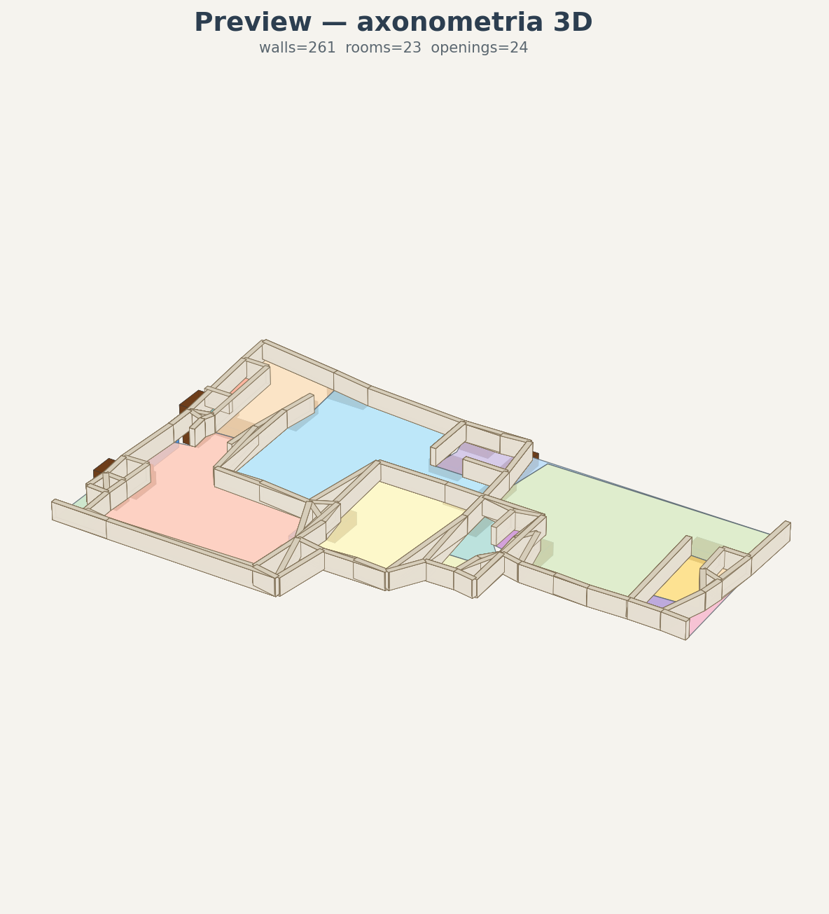
Axonometria 3D
Walls extrudadas + pisos coloridos + openings 3D em vista isométrica estilo SketchUp.
Pipeline atual (output bruto)
O que o pipeline gera hoje. Útil pra debug e auditoria, mas com problemas conhecidos (paredes fragmentadas, componentes órfãos).
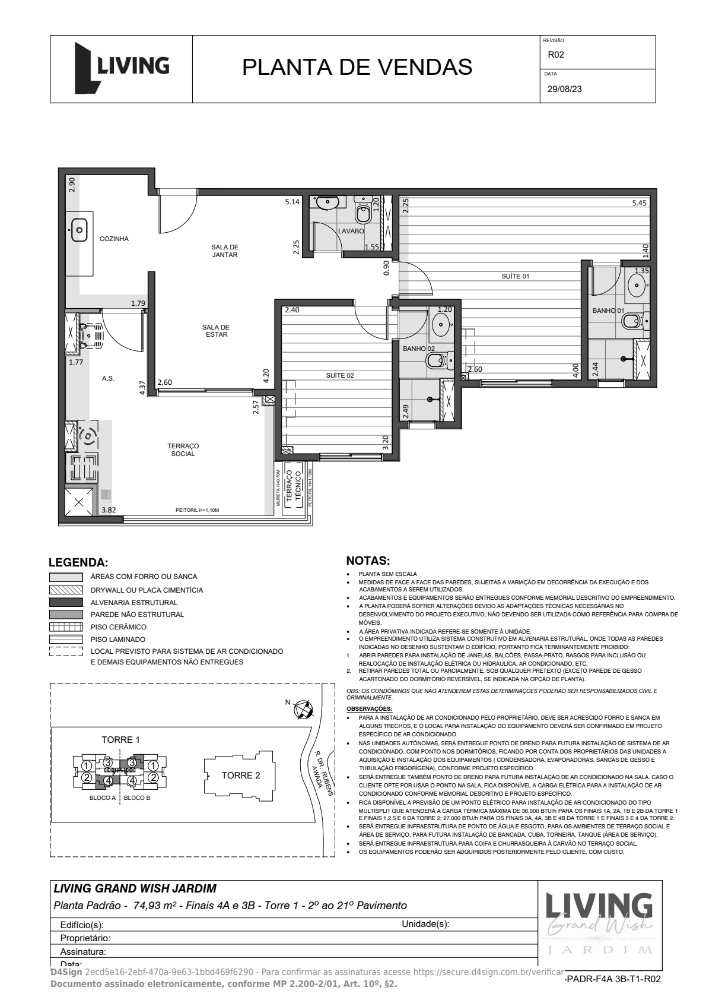
PDF original renderizado
"PLANTA DE VENDAS" — Living Grand Wish Jardim, 74,63 m². Input do pipeline.
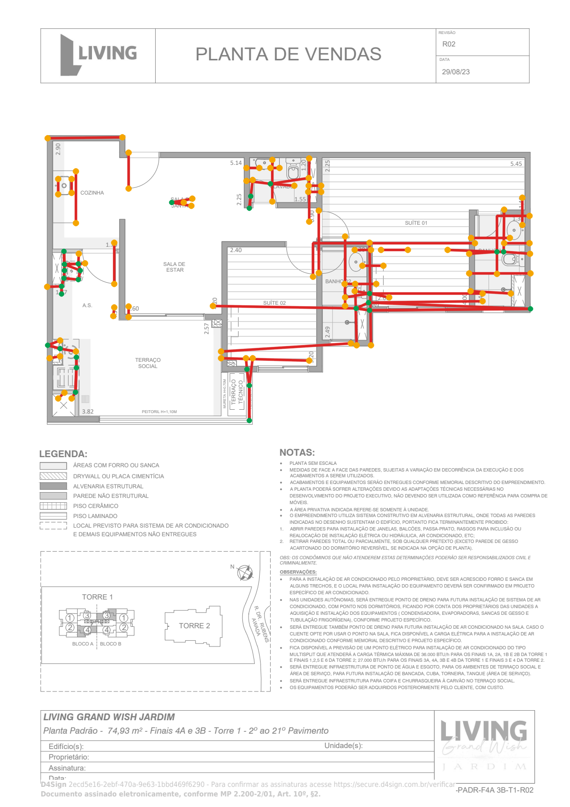
Overlay do pipeline
PDF + walls extraídas (vermelho). 108 walls · 13 rooms · 0 openings · 12 componentes desconexos · topology=poor.
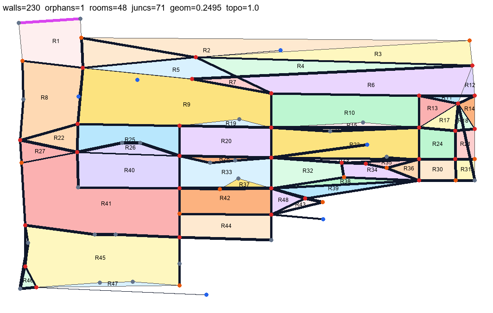
Overlay auditado (rooms coloridos)
Run agressivo do planta_74: 230 walls · 48 rooms · 71 openings · 1 órfão · topo=1.0. Mais cômodos detectados, possível over-polygonization.
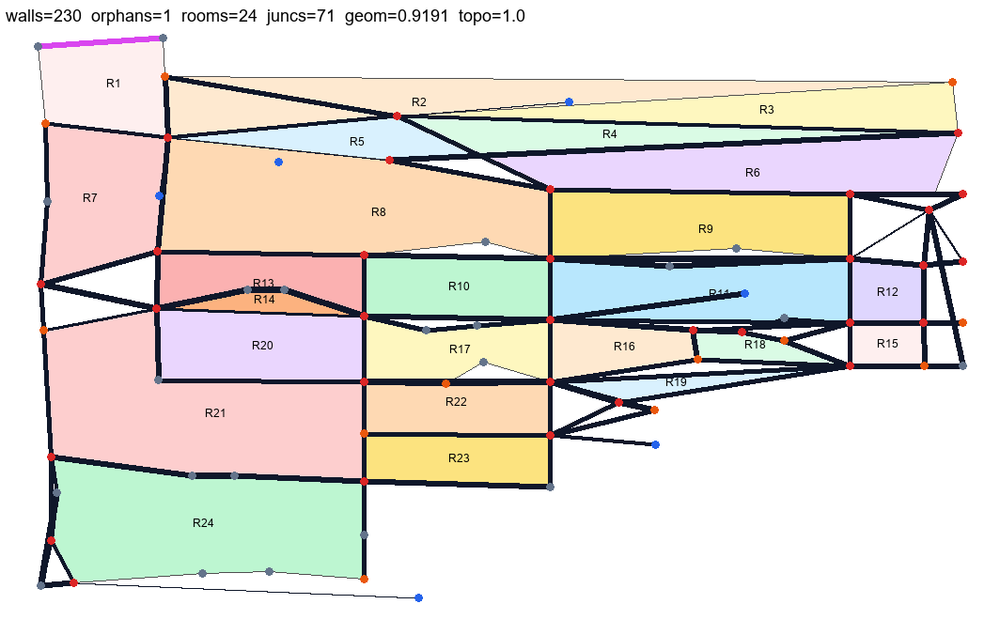
Pós filter_room_noise (24 rooms)
Branch feat/raster-room-noise-filter commit ceec361. 230 walls · 24 rooms · 1 componente · 0 warnings · geom=0.919, topo=1.0. Slivers/narrow polygons (R23, R30, R16, R17, R18, R19) eliminados pelo filtro is_room_noise habilitado no path raster.
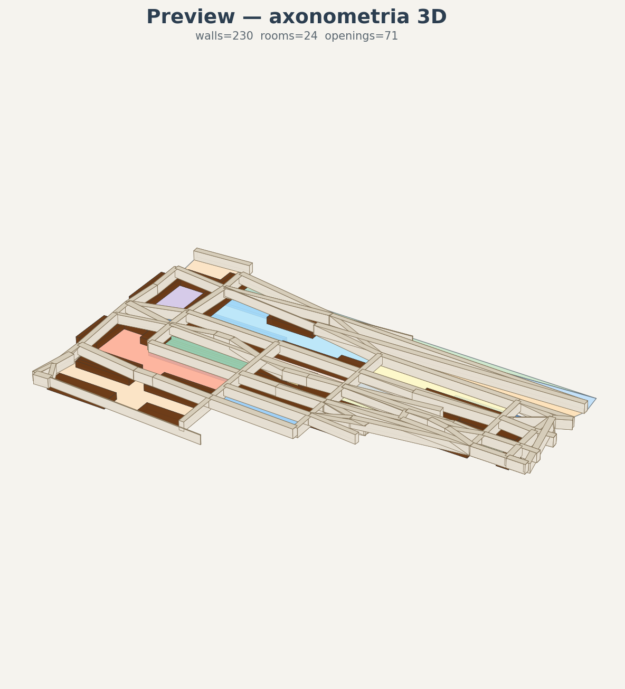
Axonometria 3D do estado atual
Render isométrico do observed_model.json pós filter_room_noise: 230 walls · 24 rooms · 71 openings. Walls extrudadas + pisos coloridos + openings 3D — preview de como a topologia atual entraria no futuro bridge SketchUp (Fase 6).
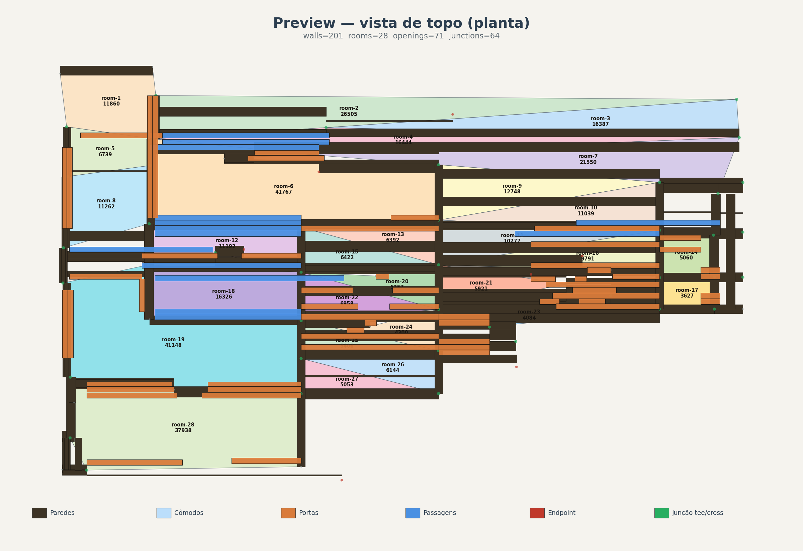
Vista de topo pós rectify + parallel_dedup
Branch feat/raster-room-noise-filter. 201 walls · 28 rooms · 71 openings. Pipeline raster ganhou dois passes pré-split em topology.service: rectify_to_orientation (collapse das walls H/V ao midpoint do label, eliminando 5-15° de jitter Hough) + parallel_dedup_factor=0.5 (funde as duplas inner/outer da mesma parede). Resultado: 100% das walls agora estritamente H ou V (vs 41% antes) e 29 walls duplicadas eliminadas. Os rooms-trapézio sumiram porque polygonize agora opera sobre wall lines coerentes.
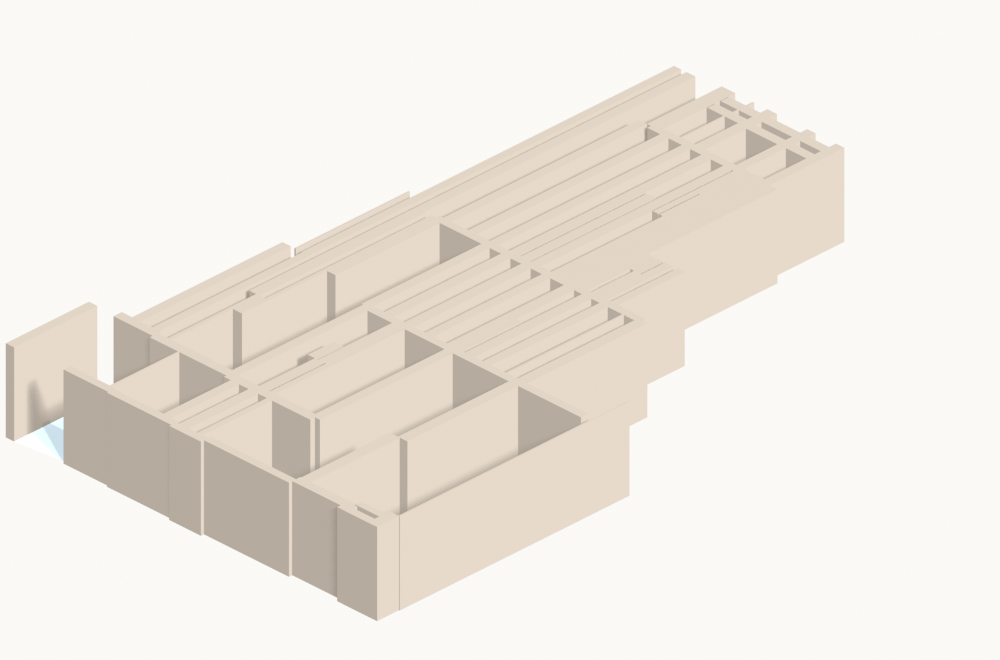
Axonometria 3D (Blender headless) pós-rectify
Render via scripts/preview/render_blender.py em Blender 5.1 --background. Walls extrudadas em mesh real, sem triângulos no topo (que antes denunciavam o jitter). Esse pipeline 3D já está disponível e independe da bridge Ruby/SketchUp da Fase 6.
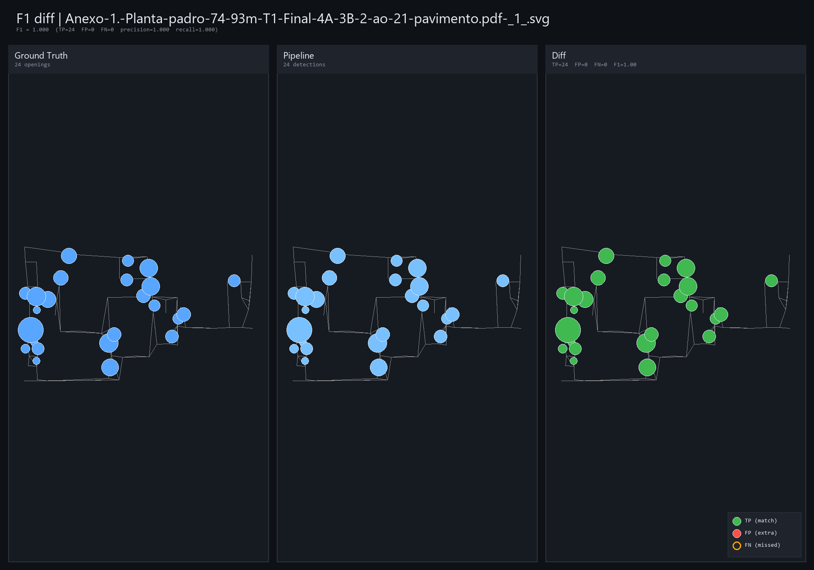
Validação F1 (openings)
Ground Truth × Pipeline × Diff. F1=1.000, precision=1.000, recall=1.000 — 24/24 openings detectados corretamente no PDF de referência.
Evolução & comparações
Histórico de iterações da branch SVG e comparativos raster vs SVG. Mostra o progresso ao longo dos commits.
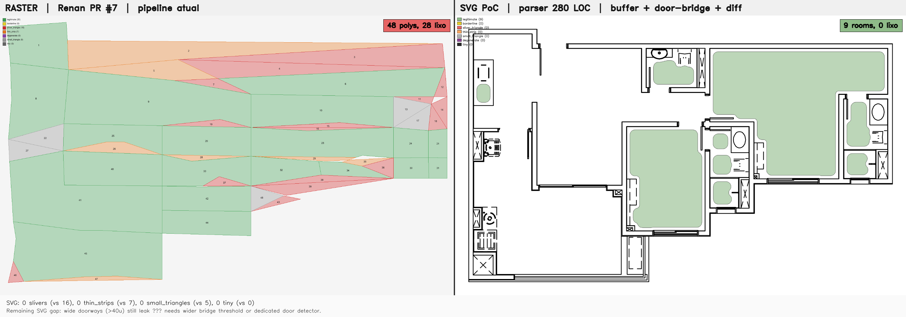
Raster vs SVG (Renan PR #7 vs PoC)
Esquerda: pipeline raster atual com 48 polys, slivers. Direita: SVG PoC com parser de 280 LOC, 9 rooms limpos.
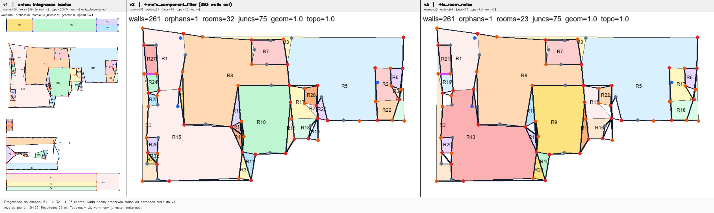
Progressão v1 → v2 → v3
Ingest básico → +main_component_filter (393 walls cortadas) → +lo_room_noise (32→23 rooms).
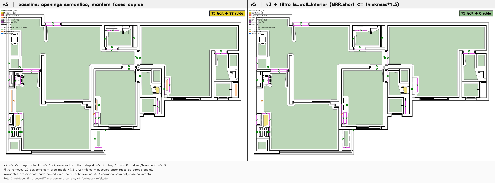
v3 (baseline) → v5 (filtro)
v3 mantinha 22 ruídos colineares; v5 com +filtro is_wall_interior reduz para 15 legítimos + 0 ruído.
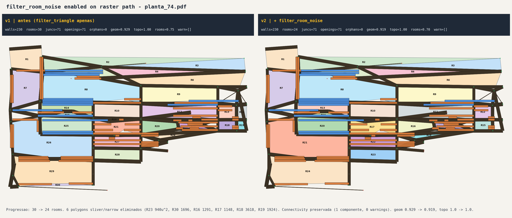
PDF / pré-fix (30 rooms) / pós filter_room_noise (24 rooms)
Side-by-side 3-way: PDF original · raster pre-fix com sliver wedges · raster pos-fix com filtro room_noise habilitado. 6 polygons sliver/narrow eliminados (R23 940u² · R30 1696u² · R16 1291u² · R17 1148u² · R18 3618u² · R19 1924u²) que o filtro 3-vertex apenas não capturava.
Workspace overview
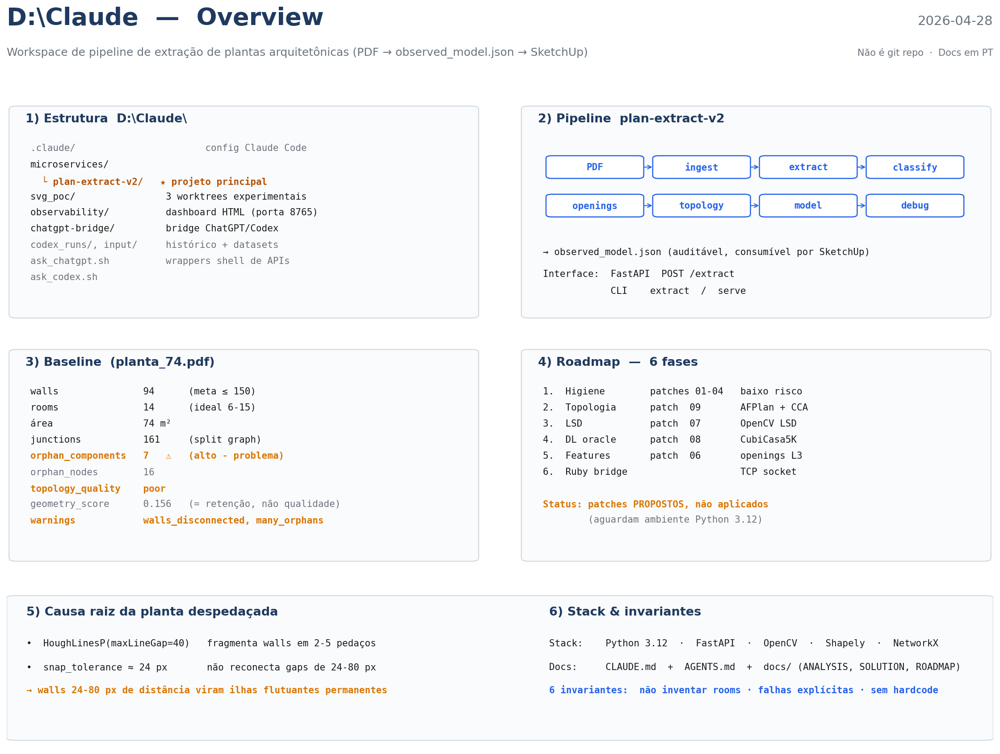
Infográfico do workspace
Estrutura D:\Claude · pipeline · baseline · roadmap · causa raiz da planta despedaçada.
Oráculo / Diagnóstico
Comparativo entre pipeline atual, oráculo CubiCasa5K e diagnóstico do LLM-architect.
Aparece aqui quando os arquivos oracle_diagnosis_llm.json ou
cubicasa_observed.json existirem no diretório do run.
Gerar com scripts/oracle/llm_architect.py e scripts/oracle/cubicasa.py.
Qualidade da extração ao longo dos runs walls · rooms · openings
quality_history.json nem example.Tempo por estágio do pipeline mediana, segundos
pipeline_timing.json nem example.Distribuição do roadmap % por status
project_status.json.Saúde do repo no tempo ruff · pytest · runs
repo_health_history.json nem example.